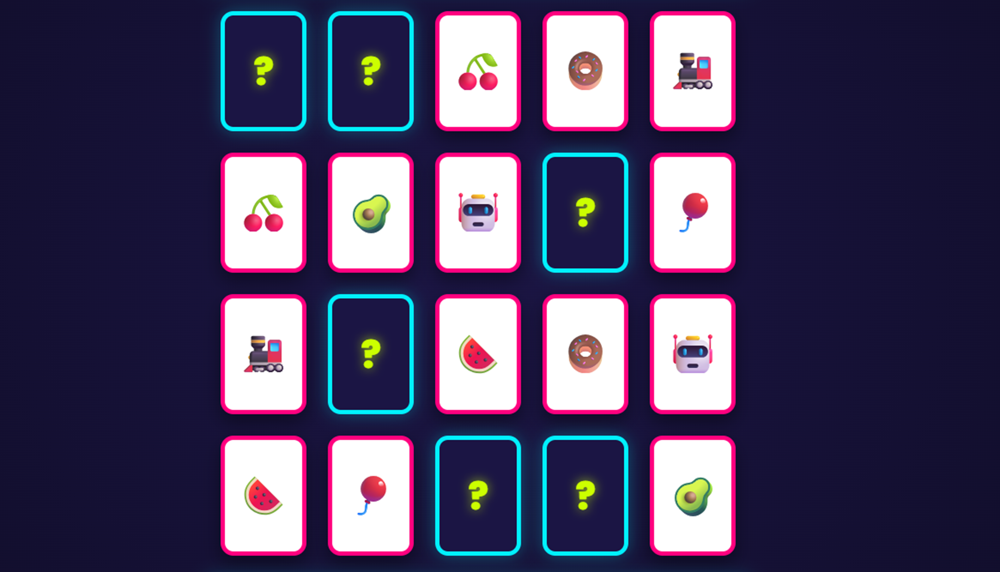

Aspiring Data Analyst with a rigorous foundation in statistical data processing, problem-solving, and functional frontend development. Synthesizing complex metrics into clean, premium digital interfaces.
Driven by logic, refined through structural visualization.
I am an ambitious data professional focusing on leveraging quantitative insights alongside clean modern development methodologies. My primary target is securing a Data Analyst Internship where I can audit complex datasets, build precise automated visualization reports, and clean messy real-world pipelines.
Having cross-functional experience building logical web environments, I understand the synergy between processing deep tabular data structures and rendering user experiences that display those insights effectively.
A highly polished interface application executing real-time matrix state validation logic loops, complete with crisp interaction physics.

SYSTEM_02An interactive state-tracking grid application assessing card flip telemetry, rendering structured animations, and recording user score metrics.
Are you scouting a performance-oriented intern who values data cleanliness and high-tier visuals? Let's connect instantly via email or github channels.